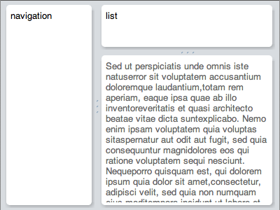

Except as otherwise noted,
the content of this page is licensed under the Creative Commons
Attribution 3.0 License.
Google Code offered in: English - Espaol - - - Portugus - P - () - ()
Panels in GWT are much like their layout counterparts in other user interface libraries. The main difference is that GWT panels use HTML elements to lay out their child widgets.
Panels contain widgets and other panels. They are used to define the layout of the user interface in the browser.
A RootPanel is the top-most panel to which all other widgets are ultimately
attached. RootPanel.get() gets a singleton panel that wraps the HTML document's
<body> element. Use RootPanel.get(String id) to get a panel for any other
element on the page.
A FlowPanel is the simplest panel. It creates a single <div> element and
attaches children directly to it without modification. Use it in cases where
you want the natural HTML flow to determine the layout of child widgets.
This panel provides a simple way to define an HTML structure, within which widgets will be embedded at defined points. While you may use it directly, it is most commonly used in UiBinder templates.
When you need to reproduce the behavior of an HTML form (e.g., for interacting
with servers that expect form POST requests, or simply to get the default form
keyboard behavior in the browser), you can use a FormPanel. Any widgets wrapped
by this panel will be wrapped in a <form> element.
When you wish to create a scrollable area within another panel, you should use a ScrollPanel. This panel works well in layout panels (see below), which provide it with the explicit size it needs to scroll properly.
Use these two panels to create simple popups and modal dialogs. They overlap existing content in browser window, and can be stacked over one-another.
These two widgets are used to create traditional HTML <table> elements, and can
also be used as panels, in that arbitrary widgets may be added to their cells.
GWT 2.0 introduces a number of new panels, which together form a stable basis for fast and predictable application-level layout. For background and details, see "Design of the GWT 2.0 layout system" below.
The bulk of the layout system is embodied in a series of panel widgets. Each of these widgets uses the underlying layout system to position its children in a dependable manner.
This panel is a singleton that serves as a root container to which all other layout panels should be attached (see RequiresResize and ProvidesResize below for details). It extends LayoutPanel, and thus you can position any number of children with arbitrary constraints.
You most commonly use RootLayoutPanel as a container for another panel, as in the following snippet, which causes a DockLayoutPanel to fill the browser's client area:
DockLayoutPanel appPanel = new DockLayoutPanel(Unit.EM); RootLayoutPanel.get().add(appPanel);
Think of LayoutPanel as the most general layout mechanism, and often one upon which other layouts are built. Its closest analog is AbsolutePanel, but it is significantly more general in that it allows its children to be positioned using arbitrary constraints, as in the following example:
Widget child0, child1, child2; LayoutPanel p = new LayoutPanel(); p.add(child0); p.add(child1); p.add(child2); p.setWidgetLeftWidth(child0, 0, PCT, 50, PCT); // Left panel p.setWidgetRightWidth(child1, 0, PCT, 50, PCT); // Right panel p.setWidgetLeftRight(child2, 5, EM, 5, EM); // Center panel p.setWidgetTopBottom(child2, 5, EM, 5, EM);
DockLayoutPanel serves the same purpose as the existing DockPanel widget, except that it uses the layout system to achieve this structure without using tables, and in a predictable manner. You would often use to build application-level structure, as in the following example:
DockLayoutPanel p = new DockLayoutPanel(Unit.EM);
p.addNorth(new HTML("header"), 2);
p.addSouth(new HTML("footer"), 2);
p.addWest(new HTML("navigation"), 10);
p.add(new HTML(content));
Note that DockLayoutPanel requires the use of consistent units for all children, specified in the constructor. It also requires that the size of each child widget (except the last, which consumes all remaining space) be specified explicitly along its primary axis.
The SplitLayoutPanel is identical to the DockLayoutPanel (and indeed extends it), except that it automatically creates a user-draggable splitter between each pair of child widgets. It also supports only the use of pixel units. Use this instead of HorizontalSplitPanel and VerticalSplitPanel.
SplitLayoutPanel p = new SplitLayoutPanel();
p.addWest(new HTML("navigation"), 128);
p.addNorth(new HTML("list"), 384);
p.add(new HTML("details"));

StackLayoutPanel replaces the existing StackPanel (which does not work very well in standards mode). It displays one child widget at a time, each of which is associated with a single "header" widget. Clicking on a header widget shows its associated child widget.
StackLayoutPanel p = new StackLayoutPanel(Unit.EM);
p.add(new HTML("this content"), new HTML("this"), 4);
p.add(new HTML("that content"), new HTML("that"), 4);
p.add(new HTML("the other content"), new HTML("the other"), 4);
Note that, as with DockLayoutPanel, only a single unit type may be used on a given panel. The length value provided to the add() method specifies the size of the header widget, which must be of a fixed size.
As with the existing TabPanel, TabLayoutPanel displays a row of clickable tabs. Each tab is associated with another child widget, which is shown when a user clicks on the tab.
TabLayoutPanel p = new TabLayoutPanel(1.5, Unit.EM);
p.add(new HTML("this content"), "this");
p.add(new HTML("that content"), "that");
p.add(new HTML("the other content"), "the other");

The length value provided to the TabLayoutPanel constructor specifies the height of the tab bar, which you must explicitly provide.
The panels described above are best used for defining your application's outer structure — that is, the parts that are the least "document-like". You should continue to use basic widgets and HTML structure for those parts for which the HTML/CSS layout algorithm works well. In particular, consider using UiBinder templates to directly use HTML wherever that makes sense.
The GWT 2.0 layout system has direct, built-in support for animation. This is necessary to support a number of use-cases, because the layout system must properly handle animation among sets of layout constraints.
Panels that implement AnimatedLayout, such as LayoutPanel, DockLayoutPanel, and SplitLayoutPanel, can animate their child widgets from one set of constraints to another. Typically this is done by setting up the state towards which you wish to animate, then calling animate(). See "Recipes" below for specific examples.
Two new characteristic interfaces were introduced in GWT 2.0: RequiresResize and ProvidesResize. These are used to propagate notification of resize events throughout the widget hierarchy.
RequiresResize provides a single method, onResize(), which is called by the widget's parent whenever the child's size has changed. ProvidesResize is simply a tag interface indicating that a parent widget will honor this contract. The purpose of these two interfaces is to form an unbroken hierarchy between all widgets that implement RequiresResize and the RootLayoutPanel, which listens for any changes (such as the browser window resizing) that could affect the size of widgets in the hierarchy.
Most widgets should not need to know when they've been resized, as the browser's layout engine should be doing most of the work. However, there are times when a widget does need to know. This comes up, for example, when a widget contains a dynamic list of items depending upon how much room is available to display them. Because it's almost always faster to let the layout engine do its work than to run code, you should not lean upon onResize() unless you have no alternative.
A panel that implements ProvidesResize is expected to propagate resize events to any of its child widgets that implement RequiresResize. For a canonical example of this, see the implementation of LayoutPanel.onResize(). Most custom widgets will want to composite an existing layout panel using ResizeComposite, however, as described next.
When creating a custom Composite widget that wrap a widget that implements RequiresResize, you should use ResizeComposite as its base class. This subclass of Composite automatically propagates resize events to its wrapped widget.
The GWT 2.0 layout system is intended to work only in "standards mode". This
means that you should always place the following declaration at the top of your
HTML pages:
<!DOCTYPE html>
As mentioned above, some of the existing GWT panels do not behave entirely as expected in standards mode. This stems primarily from differences between the way standards and quirks modes render tables.
These panels all use table cells as their basic structural units. While they still work in standards mode, they will lay out their children somewhat differently. The main difference is that their children will not respect width and height properties (it is common to set children of CellPanels explicitly to 100% width and height). There are also differences in the way that the browser allocates space to individual table rows and columns that can lead to unexpected behavior in standards mode.
You should use DockLayoutPanel in place of DockPanel. VerticalPanel can usually be replaced by a simple FlowPanel (since block-level elements will naturally stack up vertically).
HorizontalPanel is a bit trickier. In some cases, you can simply replace it
with a DockLayoutPanel, but that requires that you specify its childrens'
widths explicitly. The most common alternative is to use FlowPanel, and to
use the float: left; CSS property on its children. And of course, you can
continue to use HorizontalPanel itself, as long as you take the caveats above
into account.
StackPanels do not work very well in standards mode. Because of the differences in table rendering mentioned above, StackPanel will almost certainly not do what you expect in standards mode, and you should replace them with StackLayoutPanel.
SplitPanels are very unpredictable in standards mode, and you should almost invariably replace them with SplitLayoutPanel.
Prior to 2.0, GWT's mechanisms for handling application-level layout have a number of significant problems:
Their underlying motivation was sound — the intention was to let the browser's native layout engine do almost all of the work. But the above deficiencies can be crippling.
The Layout class contains all the underlying logic used by the layout system, along with all the implementation details used to normalize layout behavior on various browsers.
It is actually widget-agnostic, operating directly on DOM elements. Most applications will have no reason to work directly with this class, but it should prove useful to alternate widget library writers.
The GWT 2.0 layout system is built upon the simple constraint system that
exists natively in CSS. This uses four properties: left, top, width,
height, right, and bottom. While most developers are familiar with these
properties, it is less well-known that they can be combined in various ways to
form a simple constraint system. Take the following CSS example:
.parent {
position: relative; /* to establish positioning context */
}
.child {
position: absolute; left:1em; top:1em; right:1em; bottom:1em;
}
In this example, the child will automatically consume the parent's entire space, minus 1em of space around the edge. Any two of these properties (on each axis) forms a valid constraint pair (three would be degenerate), producing lots of interesting possibilities. This is especially true when you consider various mixtures of relative units, such as "em" and "%".
The following are a series of simple "recipes" for creating various structures and dealing with different scenarios. Where possible, we'll describe the layout in terms of UiBinder templates.
The following sample shows a simple application-style layout with a header, a navigation area on the left edge, and a scrollable content area.
<g:DockLayoutPanel unit='EM'>
<g:north size='4'>
<g:Label>Header</g:Label>
</g:north>
<g:west size='16'>
<g:Label>Navigation</g:Label>
</g:west>
<g:center>
<g:ScrollPanel>
<g:Label>Content Area</g:Label>
</g:ScrollPanel>
</g:center>
</g:DockLayoutPanel>
You must place this structure in a container that implements ProvidesResize, which is most commonly RootLayoutPanel. The following code demonstrates how to do this:
interface Binder extends UiBinder<Widget, BasicApp> { }
private static final Binder binder = GWT.create(Binder.class);
public void onModuleLoad() {
RootLayoutPanel.get().add(binder.createAndBindUi());
}
SplitLayoutPanel works much like DockLayoutPanel, except that it only supports pixel units. The basic application structure above can be given a splitter between the navigation and content areas like so:
<g:DockLayoutPanel unit='EM'>
<g:north size='4'>
<g:Label>Header</g:Label>
</g:north>
<g:center>
<g:SplitLayoutPanel>
<g:west size='128'>
<g:Label>Navigation</g:Label>
</g:west>
<g:center>
<g:ScrollPanel>
<g:Label>Content Area</g:Label>
</g:ScrollPanel>
</g:center>
</g:SplitLayoutPanel>
</g:center>
</g:DockLayoutPanel>
Note how we mix the dock and split panels, so that the header's size can be
specified in EM units.
To use animation with a LayoutPanel, you must first create an initial set of constraints, then animate to a target set of constraints. In the following example, we start with a child widget positioned at the top, but with no height so that it is effectively hidden. Calling LayoutPanel.forceLayout() "fixes" the initial constraints.
panel.setWidgetTopHeight(child, 0, PX, 0, PX); panel.forceLayout();
Now we give the widget a height of 2em and explicitly call [LayoutPanel.animate(int)] to cause it to resize over 500 ms.
panel.setWidgetTopHeight(child, 0, PX, 2, EM); panel.animate(500);
This will work with any constraints and any number of children.
Widgets that implement RequiresResize expect RequiresResize.onResize() to be called whenever the widget's size changes. If you are wrapping such a widget in a Composite, you'll need to use ResizeComposite instead to ensure that this call is propagated correctly, like so:
class MyWidget extends ResizeComposite {
private LayoutPanel p = new LayoutPanel();
public MyWidget() {
initWidget(p);
}
}
The Layout class has to wrap each of its child elements in a "container" element in order to work properly. One implication of this is that, when you call UIObject.setVisible(boolean) on a widget within a LayoutPanel, it won't behave quite as expected: the widget will indeed be made invisible, but it will tend to consume mouse events (actually, it's the container element that is doing so).
To work around this, you can get the container element directly using LayoutPanel.getWidgetContainerElement(Widget), and set its visibility directly:
LayoutPanel panel = ...; Widget child; panel.add(child); UIObject.setVisible(panel.getWidgetContainerElement(child), false);
In most cases you should use layout panels by attaching them to a RootLayoutPanel, either directly or via other panels that implement ProvidesResize.
There are, however, instances where you need to use a layout panel within a normal widget (e.g., FlowPanel or RootPanel). In these cases, you will need to set the panel's size explicitly, as in the following example:
LayoutPanel panel = new LayoutPanel();
RootPanel.get("someId").add(panel);
panel.setSize("20em", "10em");
Note that RootLayoutPanel provides no mechanism for wrapping an arbitrary element like RootPanel does. This is because it is impossible to know when an arbitrary element has been resized by the browser. If you want to resize a layout panel in an arbitrary element, you must do so manually.
This also applies to layout panels used in PopupPanel and DialogBox. The following example shows the use of a SplitLayoutPanel in a DialogBox:
SplitLayoutPanel split = new SplitLayoutPanel();
split.addWest(new HTML("west"), 128);
split.add(new HTML("center"));
split.setSize("20em", "10em");
DialogBox dialog = new DialogBox();
dialog.setText("caption");
dialog.add(split);
dialog.show();
Widgets that are implemented using <table> or <frame> elements do not
automatically fill the space provided by the layout. In order to fix this, you
will need to explicitly set these widgets width and height to 100%. The
following example shows this with a RichTextArea, which is implemented using
an <iframe> element.
<g:DockLayoutPanel unit='EM'>
<g:north size='2'>
<g:HTML>Header</g:HTML>
</g:north>
<g:south size='2'>
<g:HTML>Footer</g:HTML>
</g:south>
<g:center>
<g:RichTextArea width='100%' height='100%'/>
</g:center>
</g:DockLayoutPanel>